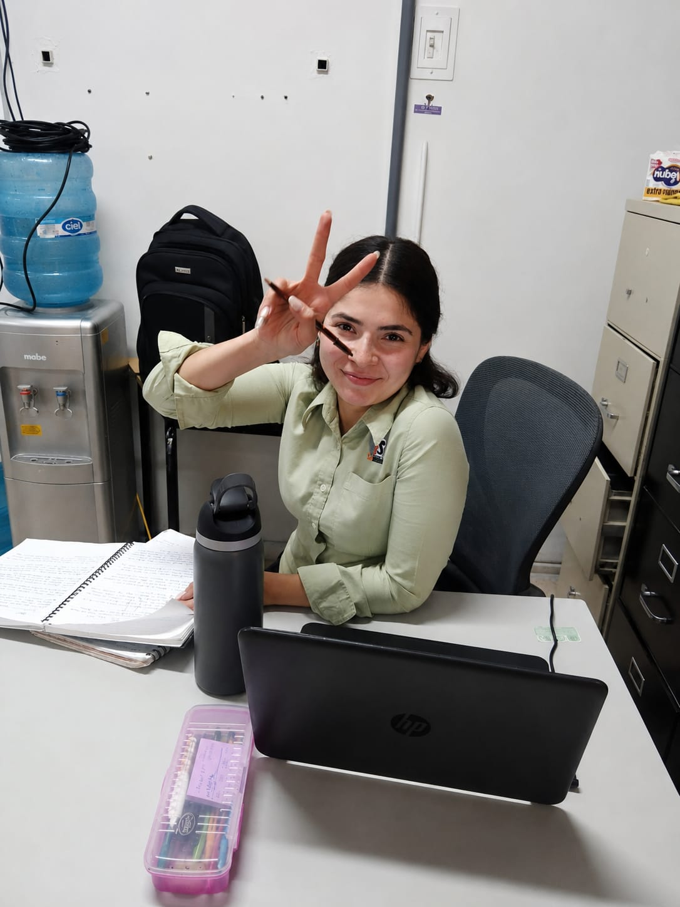
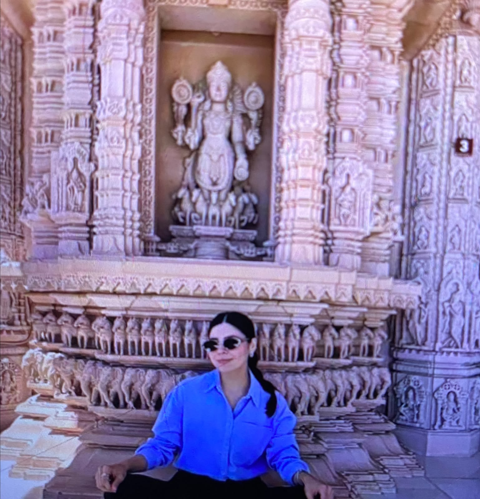
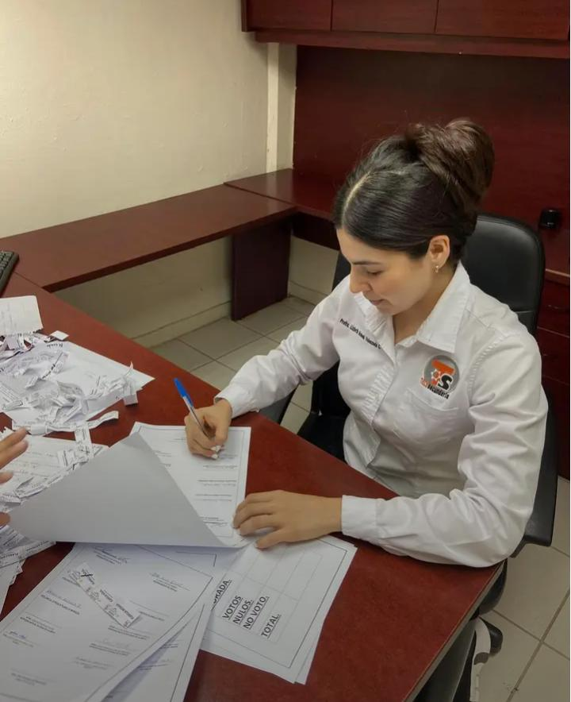

Maestra, usted es una maestra muy linda, atenta, cariñosa, divertida, tierna, auténtica y la más linda de todas.
Maestra, muchas gracias por todo. Le agarré muchísimo cariño y voy a extrañar mucho venir a la escuela a asistir a sus clases. Fue un año estando con usted. La voy a echar de menos profe, muchas gracias por el esfuerzo que hizo por hacernos entender cualquier cosa, por los consejos que nos dio.
Muchísimas gracias profe, eso se lo voy a agradecer siempre.
Quería decirle que usted es especial y única. Es la mejor maestra que he tenido (mi favorita).
Sinceramente me duele dejar la escuela aunque no lo parezca. Fueron 3 años y en esos 3 años que estuvimos juntos les agarré cariño a todos, en especial a usted que es la mejor maestra.
Es una maestra muy linda y atenta. Nuevamente gracias por todo lo que nos enseñó, eso lo aprecio mucho.
En un simple año le agarré un cariño enorme. Gracias por todo, maestra.
Espero le vaya muy bien.
Nuevamente muchas gracias por todo maestra, la voy a extrañar un montón.
Espero le guste lo que escribí y programé maestra, hice lo que pude con tal de que le guste.
Atte: El alumno que más la quiere (Timoteo) ❤️